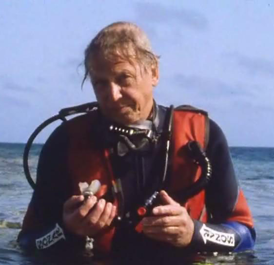

Where you will get a wide imagnation about diving journy
Take only pictures, leave only bubbles, keep the memories.
Take only pictures, leave only bubbles, keep the memories.
I can mention many moments that were unforgettable and revelatory.But the most single revelatory three minutes was the first time I put on scuba gear and dived on a coral reef.It's just the unbelievable fact that you can move in three dimensions. -David Attenborough